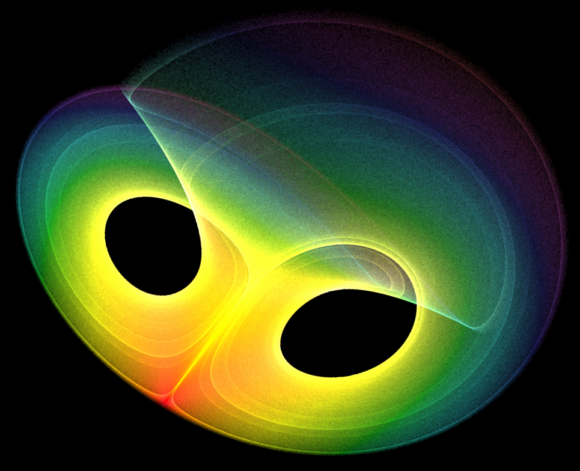
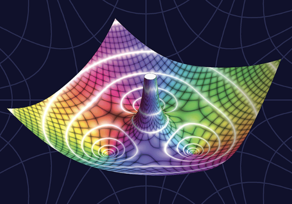
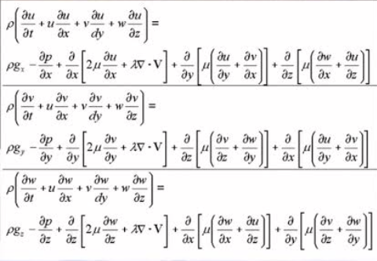
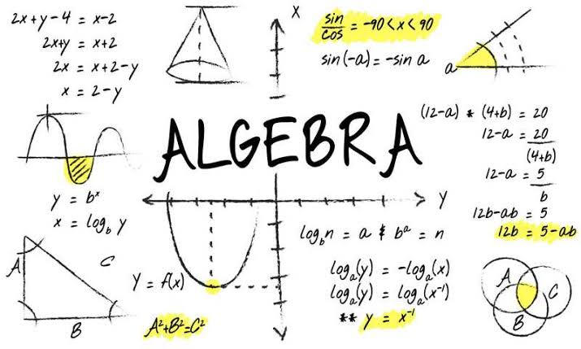
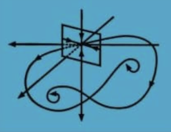
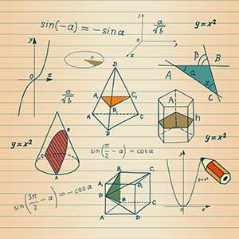
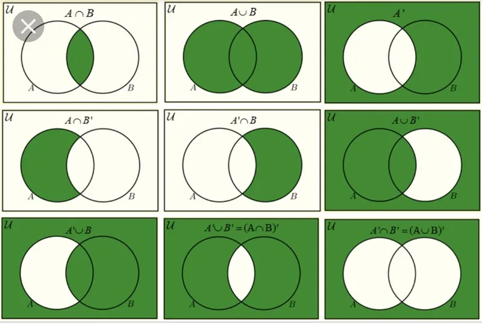
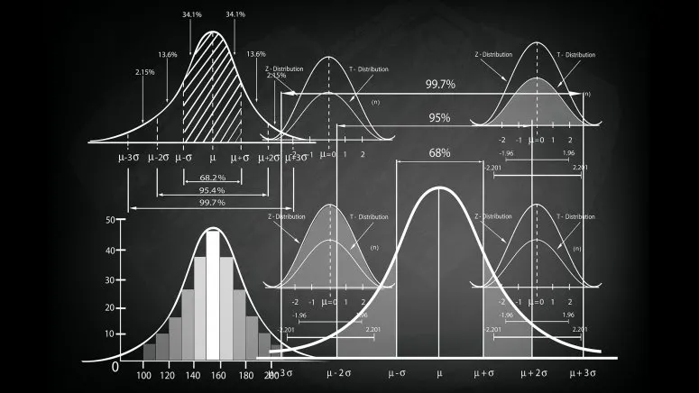
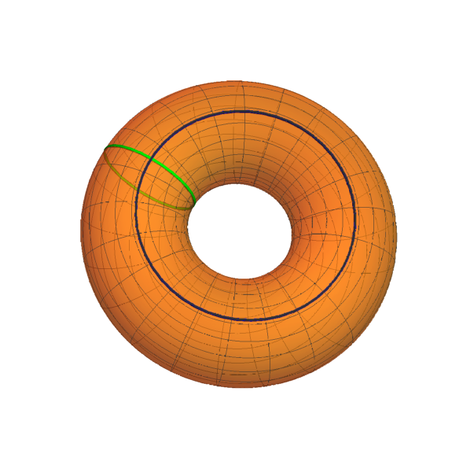
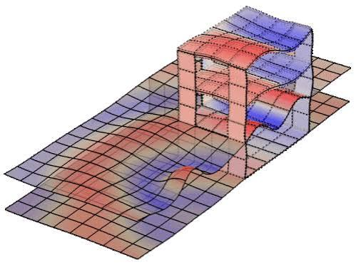

Mathematical Analysis
A rigorous introduction to limits, sequences, series, continuity, differentiation, and integration, with an emphasis on proof-based thinking and the foundations of calculus...

Complex Analysis
Notes on holomorphic functions, complex integration, Cauchy theory, Laurent series, residues, and the geometric behavior of analytic maps in the complex plane...

Equations of Mathematical Physics
A study of partial differential equations arising from waves, heat flow, diffusion, and potential theory, together with boundary-value methods used in physical models...

Algebra
Notes on algebraic structures such as groups, rings, fields, vector spaces, and linear transformations, focusing on symmetry, structure, and abstract reasoning...

Functional Analysis
An introduction to normed spaces, Banach and Hilbert spaces, bounded linear operators, duality, compactness, and the analytic language behind infinite-dimensional problems...

Geometry
Notes on curves, surfaces, manifolds, metrics, curvature, and geometric intuition, connecting classical geometry with modern differential and topological viewpoints...

Mathematical Logic and Set Theory
A foundation-oriented path through propositional and predicate logic, proof systems, sets, relations, functions, cardinality, and the language used to formalize mathematics...

Probability and Statistics
Notes on random variables, distributions, expectation, variance, limit theorems, statistical inference, estimation, and hypothesis testing for data and uncertainty...

Topology
An introduction to topological spaces, open sets, continuity, compactness, connectedness, quotient spaces, and the qualitative properties that remain unchanged under deformation...

Numerical Analysis
An exploration of numerical methods for solving mathematical problems, including root-finding, interpolation, numerical integration, and the analysis of algorithmic stability and convergence...